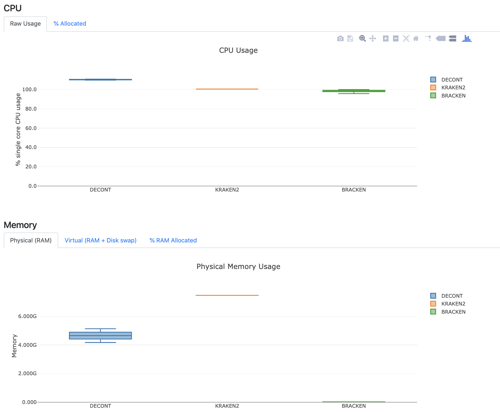

登录Nextflow Tower的官方网站
点击“Sign in”并输入邮箱，会在邮箱中收到登录链接
登陆后看到如下界面

在运行nextflow前设置环境变量
$ export TOWER_ACCESS_TOKEN=xxxxxxxxxxxxxxxxxxxxxxx在运行上一篇的流程时，加入-with-tower参数
$ ./main.nf --read_path data -with-tower
N E X T F L O W ~ version 19.09.0-edge
Launching `./main.nf` [angry_venter] - revision: 72dddbcd1f
WARN: DSL 2 IS AN EXPERIMENTAL FEATURE UNDER DEVELOPMENT -- SYNTAX MAY CHANGE IN FUTURE RELEASE
Monitor the execution with Nextflow Tower using this url https://tower.nf/watch/xxxxxx
executor > local (8)
使用上面的链接或登录Nextflow Tower便可实时监控流程的运行

运行完成后可以查看流程使用资源的情况

(未完)